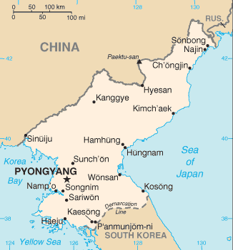

Deaf cultures and Sign Languages of the world: North Korea (Choson)
Created 10 April 2000, links updated monthly with the help of LinkAlarm.David Bar-Tzur

Flag: World flag database.
Map: Perry-Castañeda Library Map Collection.
Note: A flag next to a link shows what language the website is in. If it is followed by this icon: ( ), it is a video in that spoken language. A flag followed by
), it is a video in that spoken language. A flag followed by  means it is in the sign language of that country.
means it is in the sign language of that country. 
 means there is International Gesture.
means there is International Gesture.
 DeafTODAY. (2004, September 24). North Korea Asking for More Foreign Aid. Long dependent on foreign food aid, North Korea is now asking for more help to revive its shattered economy, ranging from assistance in training workers to teachers for deaf children, an aid official said Friday.
DeafTODAY. (2004, September 24). North Korea Asking for More Foreign Aid. Long dependent on foreign food aid, North Korea is now asking for more help to revive its shattered economy, ranging from assistance in training workers to teachers for deaf children, an aid official said Friday.